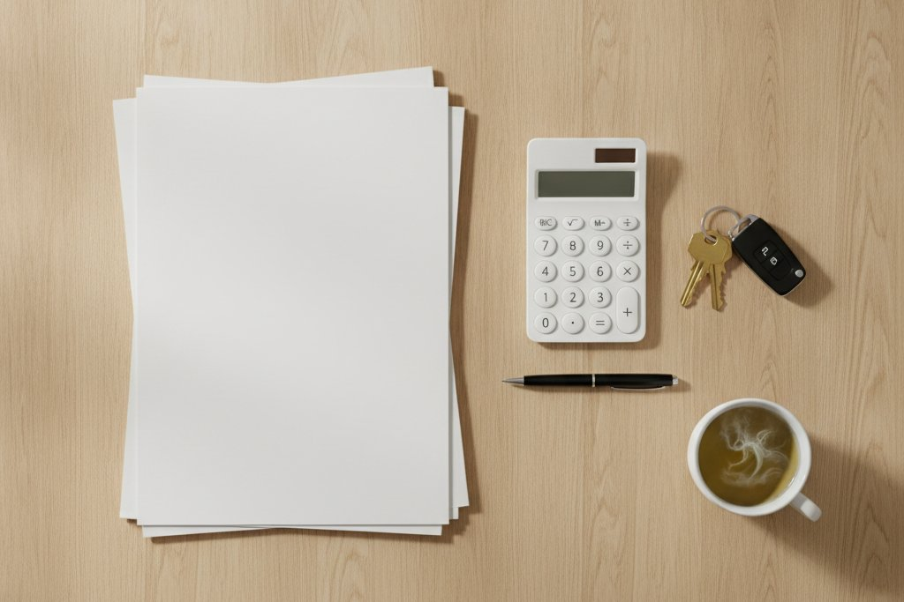
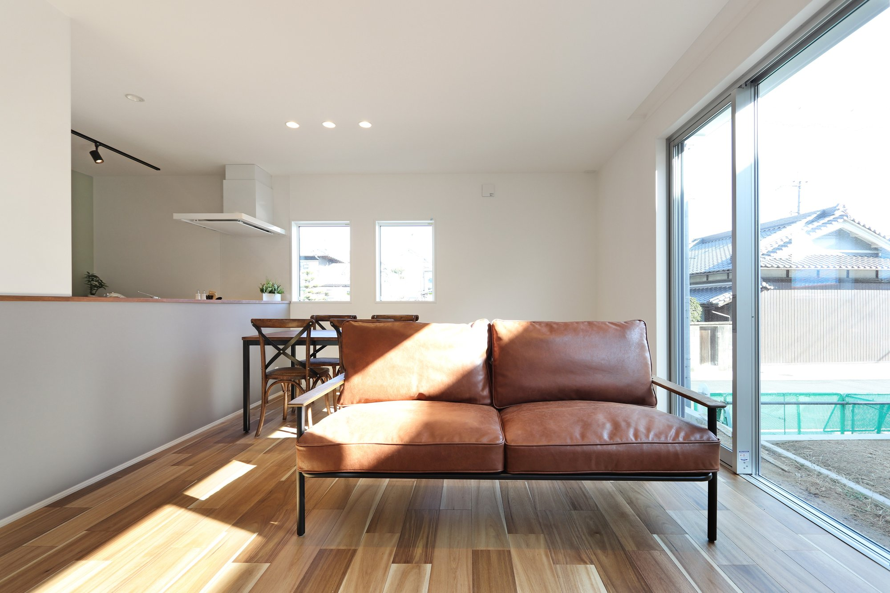
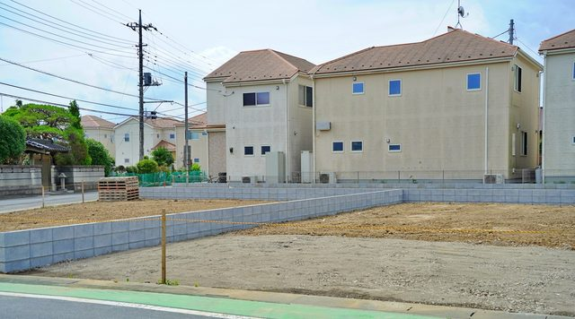

私もこの時期になると、銀行から「年末残高証明書」が届く話をよくします。
今年入居した方は来年の2月から3月に確定申告をします。
ただ、これから建てる方には、2026年からの新しい決まりが当てはまります。

書類をそろえる順番は最後にまとめました。
住宅ローン控除とは、税金が戻る制度
住宅ローンを組んで家を建てると、その年の年末のローン残高の0.7％が所得税から差し引かれます。
所得税で引ききれない分は住民税からも一部差し引かれます。
新築なら最長13年続きます。
2026年の税制改正で2030年12月31日までに入居する家まで延長されました。
新築は、家の性能で借入限度額が変わる
控除の対象にできる残高の上限（借入限度額）は、家の性能によって4段階に分かれています。
また、子育て世帯などは19歳未満の子がいる世帯、または夫婦のどちらかが40歳未満の世帯をいいます。
同じ4,000万円を借りても、1年目に差し引ける上限はこう変わります。
残高は毎年減っていくので2年目からの金額も少しずつ下がります。
家の性能は、住み心地と光熱費だけの話ではなくて、13年間に戻ってくる税金の上限も性能で決まります。
性能は、書類で証明する
ここで見落としやすいのが書類で、どれだけ性能の高い家でも証明する書類がなければ、高い限度額は使えません。
- 長期優良住宅自治体が出す「認定通知書」
- ZEH水準・省エネ基準「住宅省エネルギー性能証明書」か「建設住宅性能評価書」
長期優良住宅の認定は工事を始める前に申請します。
建ててからでは取れません。
なので、間取りの打ち合わせのうちに、どの性能でどの書類を取るかを決めておきます。
シバサンホームの家は、耐震等級3・断熱等級6を標準とし、長期優良住宅とZEHの基準にも対応しています。

2026年の住宅補助金新築で使える補助金と、申請の時期が分かります。
2028年からは、条件が厳しくなる
2028年以降に入居する新築では、次の2点が変わります。
- 省エネ基準に合うだけの家は建築確認の時期によっては、控除の対象から外れます
- 災害の危険が特に高い区域に建てる新築は控除の対象から外れます
来年に土地を探し、再来年に入居する方はちょうど切り替わりの時期に当たります。
土地を決める前にその土地がどの区域に入っているかも確かめてください。

ハザードマップを見る土地を買う前に、その場所の危険を確かめられます。
1年目は確定申告、2年目からは年末調整
1年目の確定申告で使う、主な書類です。
- 銀行の年末残高証明書
- 土地と建物の登記事項証明書
- 建物の工事請負契約書と、土地の売買契約書の写し
- 性能を証明する書類（認定通知書や性能証明書）
書類は、お引き渡しのときにまとめてお渡しする会社がほとんどです。
どれが控除に使う書類かをその場で確かめておくと慌てません。
よくある質問
2026年から、住宅ローン控除はどう変わりましたか？
2030年12月31日までに入居する家まで、5年延長されました。
新築の控除率は0.7％、期間は13年で、家の性能によって借入限度額が変わります。
また、2028年以降の入居では、省エネ基準に合うだけの新築が条件によって対象外になり、土砂災害などの危険が特に高い区域に新しく建てる家も対象から外れます。
長期優良住宅にすると、住宅ローン控除はいくら有利になりますか？
2026・2027年に入居する新築の借入限度額は、長期優良住宅が4,500万円（子育て世帯などは5,000万円）、省エネ基準に合う住宅が2,000万円（同3,000万円）です。
4,000万円を借りた場合、1年目に差し引ける上限は28万円と14万円で、14万円の差があります。
ただ、実際に戻る金額は納めた税金の範囲までです。
住宅ローン控除の手続きは、毎年必要ですか？
1年目だけ、入居した翌年の2月から3月に税務署へ確定申告をします。
2年目からは、会社員なら勤め先の年末調整で手続きが済みます。
年末残高証明書は毎年秋ごろに銀行から届きます。
繰り上げ返済をすると、住宅ローン控除はどうなりますか？
控除は年末のローン残高で計算するため、残高が減ると控除の金額も減ります。
また、返済期間を短くする繰り上げ返済で、最初の返済から完済までが10年未満になると控除そのものが受けられなくなります。
なので、時期と方法は先に計算してから決めてください。
まとめ
- 年末のローン残高の0.7％が、13年間税金から差し引かれます
- 2030年12月31日入居まで延長されました
- 新築は性能で借入限度額が変わります。
長期優良4,500万円、省エネ基準2,000万円です - 性能は書類で証明します。
長期優良の認定は着工前に申請します - 2028年以降は、省エネ基準だけの家と危険な区域の家が外れます
- 1年目は確定申告で、2年目からは年末調整です

奈良の工務店シバサンホームで、
土地さがし・資金計画・打合せの窓口をしています。
モットーはスピード・誠実さ・楽しさ。